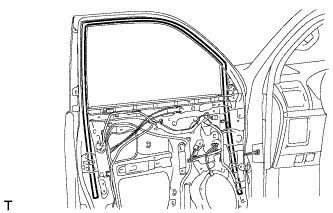
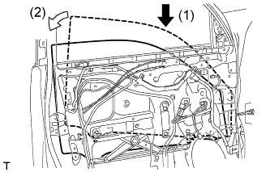
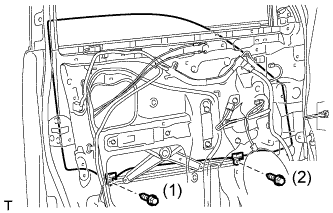
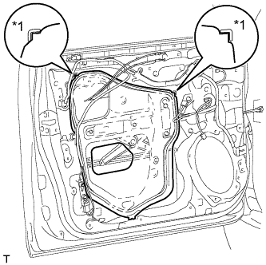
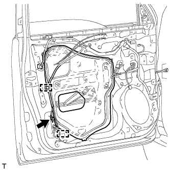
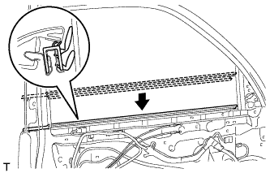
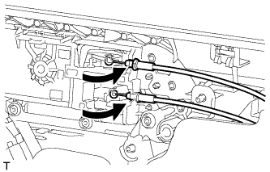
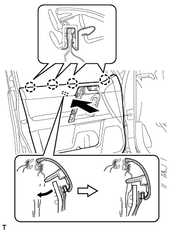
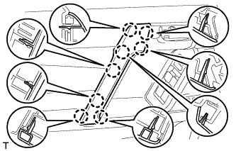

МОЛДИНГ РЕМНЯ ПЕРЕДНЕЙ ДВЕРИ > УСТАНОВКА |
| 1. УСТАНОВИТЕ МОЛДИНГ РЕМНЯ ЛЕВОЙ ПЕРЕДНЕЙ ДВЕРИ |
Установите молдинг ремня передней двери, закрепив его 6 захватами.
| 2. УСТАНОВИТЕ НАПРАВЛЯЮЩУЮ СТЕКЛА ЛЕВОЙ ПЕРЕДНЕЙ ДВЕРИ |
|  |
Установите направляющую стекла передней двери.
| 3. УСТАНОВИТЕ СТЕКЛО ЛЕВОЙ ПЕРЕДНЕЙ ДВЕРИ В СБОРЕ |
Подсоедините провод к отрицательному (-) выводу аккумуляторной батареи.
Подсоедините главный переключатель электрических стеклоподъемников в сборе и сместите стекло передней двери таким образом, чтобы были видны места установки болтов стекла двери.
Отсоедините провод от отрицательного (-) вывода аккумуляторной батареи и снимите главный выключатель электрических стеклоподъемников в сборе.
|  |
Вставьте стекло передней двери в панель передней двери вдоль направляющей стекла передней двери в направлении, указанном на рисунке стрелками, и в порядке, показанном на рисунке.
|  |
Закрепите стекло передней двери в сборе 2 болтами.
| 4. УСТАНОВИТЕ ЛЕВОЕ НАРУЖНОЕ ЗЕРКАЛО ЗАДНЕГО ВИДА В СБОРЕ |
Введите в зацепление захват, чтобы закрепить наружное зеркало заднего вида, а затем заверните 3 гайки.
Подсоедините разъем.
| 5. УСТАНОВИТЕ КРЫШКУ ТЕХНОЛОГИЧЕСКОГО ОТВЕРСТИЯ ЛЕВОЙ ПЕРЕДНЕЙ ДВЕРИ |
Наклейте новую бутиловую ленту на панель передней двери.
|  |
Проденьте трос дистанционного управления замком передней двери в сборе и внутренний трос замка передней двери в сборе через новую крышку технологического отверстия передней двери.
| *1 | Контрольная точка |
Закрепите крышку технологического отверстия передней двери, используя контрольные точки на панели передней двери.
|  |
Установите 2 зажима.
Вверните болт, чтобы закрепить жгут проводов передней двери.
| 6. УСТАНОВИТЕ ВНУТРЕННИЙ УПЛОТНИТЕЛЬ СТЕКЛА ЛЕВОЙ ПЕРЕДНЕЙ ДВЕРИ |
|  |
Установите внутренний уплотнитель стекла передней двери.
| 7. УСТАНОВИТЕ ПАНЕЛЬ ОБЛИЦОВКИ ЛЕВОЙ ПЕРЕДНЕЙ ДВЕРИ В СБОРЕ |
|  |
Подсоедините трос дистанционного управления замком передней двери в сборе и внутренний трос замка передней двери в сборе.
Подсоедините 2 разъема.
Для моделей с запоминающими устройствами сидений:
Подсоедините разъемы.
|  |
Закрепите панель облицовки передней двери с помощью 4 захватов на внутреннем уплотнителе стекла передней двери, как показано на рисунке.
 |
Введите в зацепление 12 фиксаторов и держатель панели облицовки передней двери, чтобы установить панель облицовки передней двери.
Вверните 3 винта.
| 8. УСТАНОВИТЕ ЛЕВУЮ НАКЛАДКУ ВЕРХНЕГО ПОРУЧНЯ |
|  |
Введите в зацепление 8 захватов и установите облицовку верхнего поручня.
| 9. УСТАНОВИТЕ ДЕРЖАТЕЛЬ ВНУТРЕННЕЙ РУЧКИ ЛЕВОЙ ДВЕРИ № 2 |
 |
Установите держатель внутренней ручки и закрепите его 3 захватами.
| 10. УСТАНОВИТЕ ОБЛИЦОВКУ КРОНШТЕЙНА НИЖНЕЙ РАМЫ ЛЕВОЙ ПЕРЕДНЕЙ ДВЕРИ |
Введите в зацепление 2 захвата, чтобы установить облицовку кронштейна нижней рамы передней двери.
| 11. ПОДСОЕДИНИТЕ ПРОВОД К ОТРИЦАТЕЛЬНОМУ ВЫВОДУ АККУМУЛЯТОРНОЙ БАТАРЕИ |
| 12. ОТРЕГУЛИРУЙТЕ ПОЛОЖЕНИЕ БОКОВОЙ ТЕЛЕКАМЕРЫ В СБОРЕ (для моделей с монитором бокового обзора) |
Для моделей с монитором заднего вида:
Отрегулируйте положение боковой телекамеры (Нажмите здесь).
Для моделей с системой помощи при парковке:
Отрегулируйте положение боковой телекамеры (Нажмите здесь).